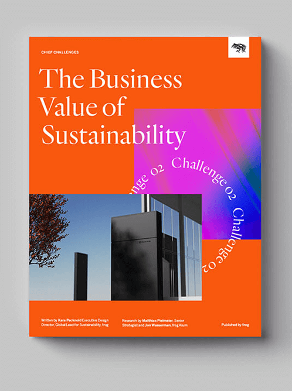

02
Going BeyondSustainability
Today’s businesses are challenged with serving business shareholders and societal stakeholders alike on environmental, social and climate issues. In this video, we ask sustainability experts Dr. Leyla Acaroglu (Disrupt Design) and Raz Godelnik (Parsons): Can businesses be leaders in sustainability?
Download the Business Value of Sustainability report to find strategies for creating value for your business, customers, communities and today’s most pressing client: Planet Earth.
Climate trends and social forces are converging to push us into the Next Economy. If the looming threat of ecological collapse weren’t enough, consumers and employees are demanding that brands address critical issues like the global climate crisis, social justice, workplace diversity, equity and inclusion.

Business as usual is over.
Across the globe, new standards and expectations are being set to reckon with the impact businesses have on their customers, their markets and the world at large.
As companies increasingly pursue sustainable initiatives, they’re seeking not only to offset their impact, but to actively regenerate—to give back to people, planet and society. In the process, these businesses are earning trust with consumers, growing their customer base and inspiring pride in their employees.
69%
of executives
say that sustainability increases brand value
Source: Capgemini Research Institute, Sustainability in Consumer Products and Retail Survey, 2020
At frog, we define sustainability as the social, environmental and climate impact that a company can make in support of people and the planet.
Why does sustainability matter now? Climate projections are more urgent than ever, prompting governments around the world to pursue more aggressive environmental and climate regulations. At the same time, consumers and employees alike are holding businesses to higher ethical standards.
What does sustainability look like?
frog’s Kara Pecknold, Global Sustainability Lead, and Andreas Markdalen, Global Chief Creative Officer, discuss the ethics and aesthetics of sustainable design.
Sustainable Transition
Business as usual
Offset harm
Responsible Business
Do No Harm/ Do Good
Regenerative Business
Capture and Regenerate
Regenerative transformation is the future.
If digital transformation defined how we live and work in the last 10 years, regenerative transformation will define the next ten. While regenerative design is rooted in farming, agriculture and architecture, its emphasis on restoration, renewal and revitalization has innovative applications in many fields. As firms make regenerative design their default approach, they will not only uncover opportunities to realize better products and services—they will also create more dynamic, sustainable and adaptive systems for them to live within.

“We see a complete transformation in the way we consume materials—and the way we manufacture and build.”
Allison Dring
CEO, Made of Air
Listen to the frog + Made of Air podcast
Go behind the scenes of the real frog + Made of Air brand strategy collaboration. Listen to the Design Mind frogcast here, Apple Podcasts, Spotify and anywhere you listen.
Here at frog, we measure the business value of sustainability across four distinct business outcomes:
01

Purposeful Disruption
Be a powerful force for change.

For years, “disruption” has been the name of the game. But disruption is often misunderstood. Its goal is not simply to topple institutions, leaving your competition to pick up the pieces in your destructive wake. Instead, disruption means acting as a powerful, transformative force for change—making it the perfect partner for any organization that wants to act boldly and decisively on its sustainable purpose.
Client Story
Made of Air, a Berlin-based startup, has developed a new carbon negative thermoplastic. With their cutting-edge sustainable materials, Made of Air is transforming products in mobility, consumer goods and the built environment.
In preparation for their next stages of growth, they came to frog for help building a comprehensive brand strategy, from defining a purpose to designing a complete digital transformation. The result is a clear vision for Made of Air that helps them stand out to investors, partners and top talent.

02

Resilient Strategies
Future-proof decision-making, tools and processes for good.

Until we can collectively reach drawdown—the point at which levels of greenhouse gases in the atmosphere begin to decline—the consequences of climate change will continue to worsen. By putting resiliency at the center of strategy, organizations can contribute to reaching drawdown while mitigating business and operational risks posed by climate change—and keep ahead of environmental regulations.
Client Story
Bellwether is on a mission to create a more equitable and sustainable coffee industry. To tell their story, the venture came to frog for help building a brand that evokes the radical transparency provided by the company’s platform.
The venture’s new brand mark features a radiating circle representing the tenets of community, accessibility and inclusivity that Bellwether makes possible—and positions the brand well for a long future transforming the coffee industry.

Sustainable Business Model Canvas
Try the frog Sustainable Business Model Canvas to find processes and partnerships that redefine individual and collective business success.

03

Value Integration
Unite your organization around making an impact.
By demonstrating commitment to the same values as the customers and employees they want to attract, companies can advance their business goals while deepening their impact. In integrating sustainability as a core value, organizations can transform their own operations while pressuring competitors to follow suit, helping to build a thriving community that’s positioned to take on some of the biggest challenges facing our world.
Client Story
The Norwegian Sea Rescue Society (RS) is a humanitarian association whose purpose is to save lives, salvage assets and protect the coastal environment of Norwegian waters.
When the RS chose sustainability as one of six action areas for 2030, frog helped the organization co-create a roadmap for this commitment. The result is an ambitious strategy aimed at deeply reducing carbon footprint, building a more inclusive sea community and supporting sustainable choices.

04
Cultural Transformation
Instill a regenerative mindset inside and outside of your organization.
Consumer culture of the Next Economy is already shifting toward sustainability, suggesting that organizations not already working to mirror this cultural transformation risk being left behind. By attracting and hiring forward-looking leaders with applicable social, technological and ecological expertise, organizations can meet external and internal expectations for sustainable governance while pioneering new business models and innovation economies.
Client Story
The United Nations Office for the Coordination of Humanitarian Affairs (UN OCHA) coordinates humanitarian response to expand the reach of action at times of crisis, from natural disasters, to environmental challenges to political and social upheaval.
frog and UN OCHA partnered to launch the Humanitarian Data Exchange (HDX), a platform that enables workers from the UN, NGOs, government and universities radically improve data sharing during extreme situations. Millions of datasets have been used to inform action by organizations and individuals around the world.
Moving towards sustainability
There are several strategies that can be implemented to reduce a website’s digital footprint. For frog’s Going Beyond Sustainability report, we created a ‘reduced carbon mode’ feature that takes small yet enlightening steps towards a more sustainable web.
This process has proven that making real change requires collaboration and honest, continuous conversation organization-wide. There are more improvements we are exploring that are yet to be implemented, such as green hosting, using open source or system typefaces, and having a further cleanup of our page weight. Here are some of the areas we’ve focused on first:

Asset Optimization
Less is more
Low-Energy Colors
Going dark mode
Data Optimization
Lightening the load

Of course, these first steps toward a more sustainable website by optimizing its visual content is just the tip of the iceberg. The reality is that we still have a long way to go to meet our objectives of reducing our carbon footprint and raising the standard of sustainable design. But we are excited to be taking these urgent steps toward a more sustainable future.
We’re not just changing products. We’re changing companies.
At frog, our practice of human-centered design is evolving to help our partners take on the challenges of the Next Economy. We have seen firsthand that innovation works best when balancing the needs inherent in coordinating complex, interconnected systems with those of driving lasting change on a larger scale than ever before. By focusing on creating value, businesses will be better positioned for an increasingly sustainability-conscious marketplace, and better able to adapt to the needs of a sustainable, regenerative future. Dive deeper into the four business outcomes of sustainability and find frog case studies in the new frog Business Value of Sustainability report.
Stay Tuned
On each episode of Chief Challenges, we explore the big issues facing innovative business leaders today.
Sign up now to get the latest on Chief Challenges


Chief Challenges: Going Beyond Sustainability
Download the full report now

Reduced carbon mode
Click to decrease energy usage on this page.
Learn more
We respect your privacy
We use Cookies to improve your experience on our website. They help us to improve site performance, present you relevant advertising and enable you to share content in social media. You may accept all Cookies, or choose to manage them individually. You can change your settings at any time by clicking Cookie Settings available in the footer of every page. For more information related to the Cookies, please visit our Cookie Policy.